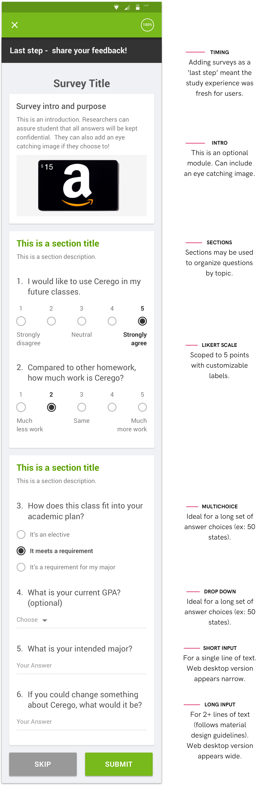
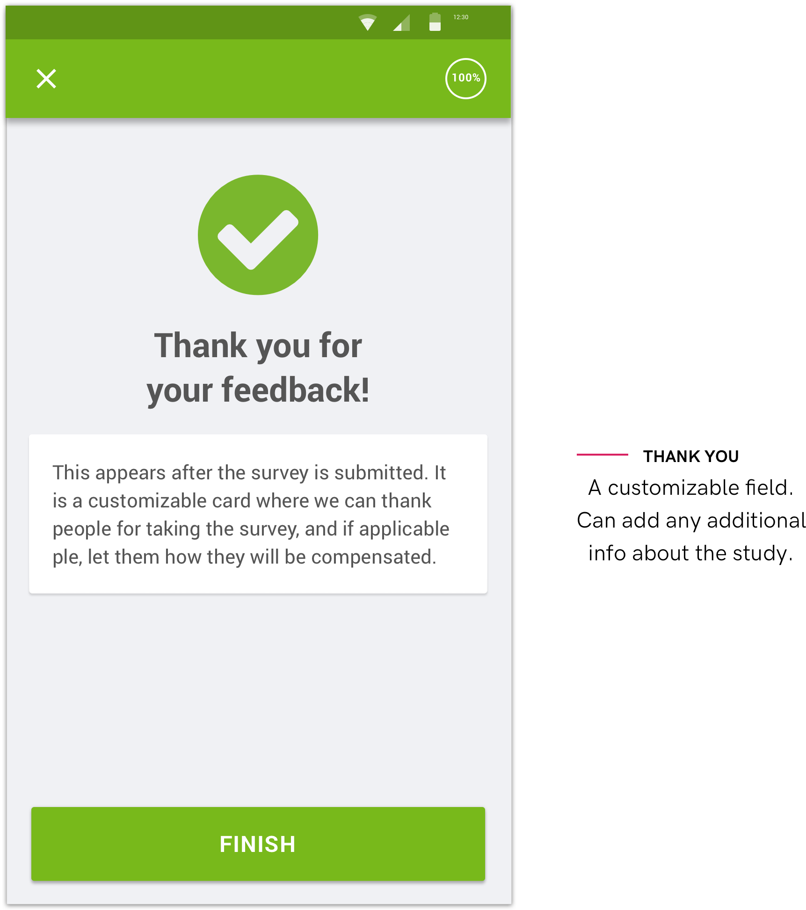

Cerego recieved a grant from the Bill & Melinda Gates Foundation to develop ‘Next Generation Courseware’ for community colleges. When it came time to evaluate our pilot program, we found it both difficult and expensive to incentivise students to complete emailed surveys. I led the design of a flexible survey tool that would move the survey inside the Cerego learning application.
Our initial goal was to improve response rates to the Gates grant surveys, but we also saw a broader business potential for our survey tool. Cerego didn't need all the features of Survey Monkey, but we did need a tool that would be flexible for a variety of survey designs and question types.
My research included:
Some of the key findings were:
Following these steps, I worked with a PM and engineer to discuss my findings and arrive at a core set of survey components. Unfortunately, adopting the Typeform-style UI would have doubled the engineering resources needed for the project, so for MVP we elected to take a simpler approach.
We elected to launch with 5 question types, allowing for the collection of both quantitative and qualitative data. Below is the blueprint for our MVP survey components. All modules are optional and customizable.
This feedback helps users know that their survey was sumbitted successfully. It also gives survey creators a place to write a short debrief (i.e., you'll get your giftcard in a 2 weeks).
Our previous response rate for our Gates Grant survey was 52%. This used an emailed Survey Monkey link with a $10 giftcard incentive. Our test of the new in-app survey design used the same survey questions, but left out the financial incentive. We achieved a comparable response rate of 56%, but without having to spend a dime on financial incentives. Simply placing the survey in front of learners as they completed a study session was enough to elicit a strong response rate. It also saved Cerego several thousands of dollars in financial incentives. Overall a huge success of our MVP!